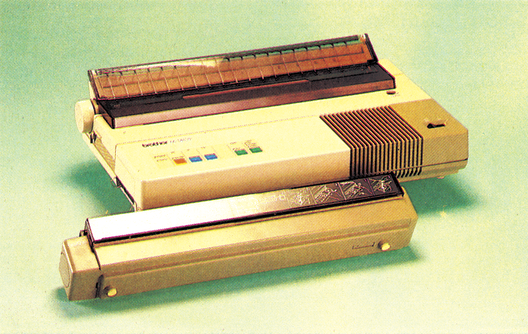
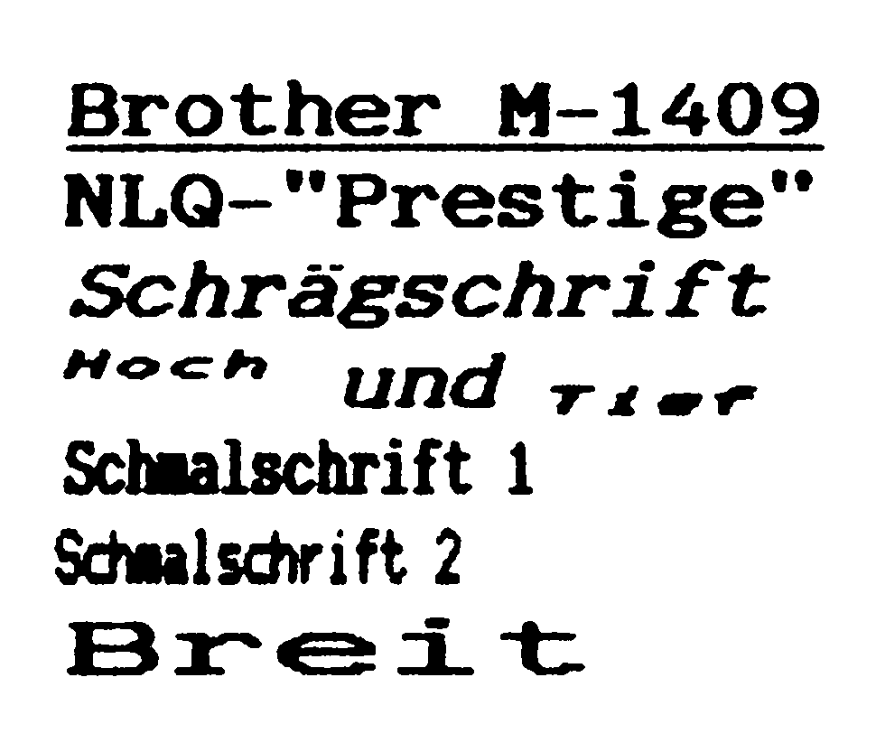
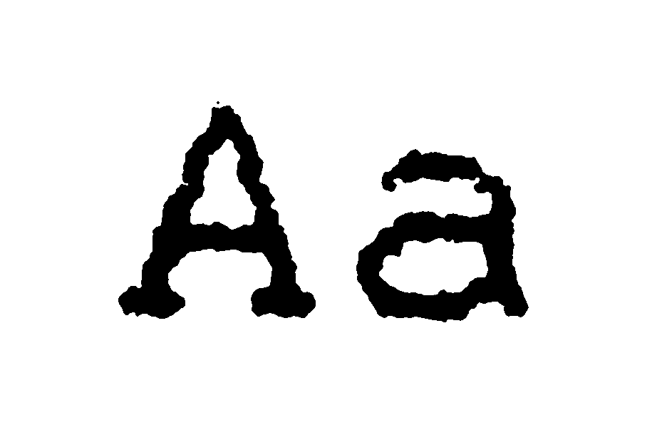

Brother M-1409 — hohe Leistung ansprechend verpackt
Mit dem neuen Matrixdrucker M-1409 zeigt Brother, welche Fähigkeiten heute auf kleinstem Raum untergebracht werden können. Daß die »gute Form«, das Design, dabei nicht zu kurz gekommen ist, sieht man dem M-1409 auf den ersten Blick an.

Auf unseren immer überfüllten Redaktionsschreibtischen war der Drucker sofort willkommen, daer wegen seiner kompakten und flachen Bauweise nur wenig Platz beansprucht. Mit seinem Gewicht von nur 5,5Kilogrammläßter sich ohne Mühe transportieren. Trotz der geringen Abmessungen des Gehäuses verarbeitet der M-1409 Einzelblätter bis zum Format DIN AS.
Auffallend ist das komfortable Bedienerfeld. Es ist mit sechs LED-Anzeigen und fünf Folientasten ausgestattet. Der Anwender kann hier Off/Online einstellen, Zeilen- und Blattvorschub steuern, sowie zwischen Ausdruck in Schönschrift- oder in Entwurfsqualität wählen.
Die auf der linken Geräteseite eingebauten Buchsen für die parallele Centronics- und die serielle RS232C-Schnittstelle entsprechen sowohl in der Form, als auch bei der Pinbelegung der üblichen Norm. Zur Datenpufferung ist ein 3 KByte großer RAM-Speicher vorhanden.
Einzelblatt und Endlospapier
Der M-1409 ist mit einem Schubtraktor zur Versorgung mit Endlospapier bis maximal 340 mm Breite ausgestattet. Gegenüber einem Zugtraktor bringt dies den Vorteil, daß bereits das erste eingespannte Blatt bedruckt werden kann. Die vorhandene Papierabreißkante ist ausreichend scharf.
Der Drucker ist für den komfortablen Einsatz von Einzelblättern mit einer Papierstütze und einer Papieranlagevorrichtung ausgestattet. Einzelblätter werden auf Tastendruck automatisch eingezogen, dabei verhindern Positionierführungen das Schräglaufen oder gar ein Verheddern des Papiers. Bis zu zwei Durchschläge werden in einem Arbeitsgang erstellt.
Eine automatische Einzelblattzuführung sowie ein auf 16 KByte erweiterter Pufferspeicher ist zusätzlich erhältlich. Mit einem Kopfeinstellhebel kann der Abstand zwischen dem Druckkopf und der Schreibwalze entsprechend der verwendeten Papierstärke angepaßt werden.
Die drei DIP-Schalter zur Auswahl der Zeichensätze und der Druckarten sind auf der Hauptplatine im Innern des Druckers untergebracht. Nach Entfernen einer Abdeckung (ohne Werkzeug) sind sie trotzdem leicht zugänglich.
Der etwas klein geratene 9-Nadel-Druckkopf wird mit Hilfe eines Plastikzahnriemens auf zwei Führungsschienen bewegt. Insgesamt macht das Design (Bild I) des M-1409 einen hervorragenden Eindruck, die Verarbeitungsqualität ist gut. Aus dem Rahmen fällt lediglich die Befestigung der Stachelwalzen. Trotz Arretierunglassen sie sich bewegen.
Die Installation des Druckers gelingt dank des gut gegliederten, mit vielen Abbildungen versehenen Handbuchs rasch. Das Einlegen der Farbbandkassette bereitet keine Schwierigkeiten. Für den Anschluß an den Computer benötigt man lediglich ein einfaches User-Portkabel (einschließlich Übertragungssoftware) oder ein Hardware-Interface (siehe Vergleichstest in Ausgabe 2/86).
Erst die Fähigkeit eines Druckers, den Ausdruck auf die verschiedensten Arten zu steuern, mehrere Zeichensätze zu beherrschen, sowie die Unterstützung durch kommerzielle Programme, ergibt die Qualität des Gerätes. Hier entspricht der M-1409 dem augenblicklichen Stand der Entwicklung. Für die Auswahl der Schriftarten und zur Steuerung des Druckbetriebs verwendet der M-1409 die von Epson entwickelten Codes der ESC/P-Norm. Die über 70 Steuersequenzen entsprechen komplett den Befehlen des Epson FX-85. Alle für Epson-Drucker vorgesehenen Textverarbeitungs-, Kalkulations-, Datenbank- und Grafikprogramme können daher ohne jede Anpassung auch mit dem M-1409 eingesetzt werden.
Druckerbefehle — vielfältig und kompatibel
Zusätzlich beherrscht der Drucker die beiden Zeichensätze des IBM-PC sowie 16 nationale Zeichensätze. Alle Zeichensätze lassen sich mit den verschiedenen Druckarten kombinieren: Pica, Elite, Kursiv, Breit-, Fettschrift, Doppeldruck, zwei Kleinschriftarten, Hoch- und Tiefstellen, Unterstreichen, Proportional- und Schönschrift mit dem »Prestige« Zeichensatz. Drei weitere
Schönschriftzeichensätze sind optional zu erwerben. Auch beim Ausdruck von hochauflösender Grafik ist der Brother M-1409 Epson-kompatibel. Er beherrscht damit ebenfalls acht verschiedene Grafikmodi, welche einfache, doppelte und vierfache Dichte sowie zwei Bildschirm- und zwei Plotter-kompatible Ausdrucksarten umfassen. Selbstverständlich ist auch der beliebte, weil einfach zu handhabende Masterdruckbefehl (ESC! n) vorhanden, mit dem durch Veränderung nur einer Variablen zahlreiche verschiedene Schriftarten einstellbar sind. Der Anwender kann den Druckerpuffer auch für die Definition eines eigenen, maximal 256 Zeichen umfassenden Zeichensatzes sowohl im Normal- als auch im Schönschriftmodus einsetzen.
Ganz schön flott
Die Schriftqualität ist sowohl im Entwurfs- als auch im Schönschriftmodus gleichmäßig gut (Bild 2 und Bild 3). Bei Entwurfsqualität druckt der M-1409 maximal 180 Zeichen in der Sekunde. Im praktischen Betrieb haben wir 101 Zeichen in der Sekunde in der Schriftart Pica und 27 Zeichen in der Sekunde im Schönschriftmodus gemessen. Die maximale Zeichenzahl pro Zeile beträgt in Elite-Schmalschrift 220 Zeichen (20 Zeichen pro ZI).


Der M-1409 hat zwei eingebaute Selbsttests, welche den Zeichenvorrat sowie die verschiedenen Schriftarten demonstrieren. Zur Kontrolle und Diagnose dient das Ausdrucken der vom Computer übertragenen Daten in hexadezimaler Form.
Obwohl der Drucker bereits im Normalmodus relativ leise arbeitet, kann zusätzlich halbe Geschwindigkeit und damit ein weiter verminderter Geräuschpegel gewählt werden. Weitere technische Einzelheiten entnehmen Sie bitte der nebenstehenden Tabelle.
| Name des Druckers: | Brother M-1409 | Empfohlener Preis: | 1653 Mark |
|---|---|---|---|
| Abmessungen (B x T x H): | 424 x 245 x 79 mm | Gewicht: | 5,5 Kilogramm |
| Unterstreichen: | Ja | Proportionalschrift: | Ja |
| Zeichenmatrix (H x B): | 7 x 9 Punkte | NLQ-Matrix: | Doppeldruck und Zeilenvorschub um 1/216 Zoll |
| Papierarten: | Einzel, Endlos | Zeichensätze: | ASCII + IBM + 16 nation. |
| Papierformate: | Einzel, A3 Endlos, maximal 340 mm breit | Durchschläge: | bis zu 2 |
| Zeichen/Zeile: | bis zu 220 | Selbsttest: | Draft + NLQ |
| Hexdump: | Ja | Autom. Einzelblatt: | Ja |
| Pufferspeicher: | 3 KByte, optional 16 KByte | Rückwärtstransp.: | Ja |
| Geschwindigkeit angegeben: | 180 Zeichen/Sekunde | NLQ-Geschwind. angegeben: | keine Angabe |
| Geschwindigkeit Praxistest: | 76 Zeilen mit je 80 Zeichen in der Minute ≙ 101 Zeichen/Sekunde | NLQ-Geschwind. Praxistest: | 20 Zeilen mit je 80 Zeichen in der Minute ≙ 27 Zeichen/Sekunde |
| Ladbar. Zeichensatz: | Ja | Probetext: | 1,53 Minuten |
| Grafikmodi: | 2 mit 9 Nadeln, 8 mit 8 Nadeln, 660 bis 2640 Punkte je Zeile | ||
| Funktionstasten: | Line-, Formfeed, Online, 2 weitere zur Auswahl von Schrift- und Papierart | ||
| Ausstattung: | Centronics- und serielle RS232C-Schnittstelle, Einzelblattstütze | ||
| Schriftarten: | Pica, Elite, Schmal, Breit, Doppel, Fett, Hoch, Tief, Proportional, Schönschrift, Italic | ||
| Besond. Funktionen: | automatischer Einzelblatteinzug | ||
| Sonderzubehör: | 2 Schönschriftmodule, automatische Einzelblattzuführung | ||
Mobil und überall verwendbar
Bei kleinsten Abmessungen und überraschend geringem Gewicht bietet das eingebaute Steuerprogramm des Brother M-1409 den gleichen Komfort und die Vielfalt der Druckarten wie sein Vorbild der Epson FX-85. Diese Leistung steckt in einem kompakten und leichten Gehäuse. Der Drucker garantiert aufgrund der vorhandenen Standard-Schnittstellen, der Zeichensatzvielfalt sowie des vorhandenen IBM-Modus auch beim Aufsteigen oder Umsteigen auf andere (Computersysteme seine auch zukünftig bestehende Einsatzfähigkeit.
(Erich Tassoti/aw)Info: Brother GmbH, Rosengarten 14, 6368 Bad Vilbel